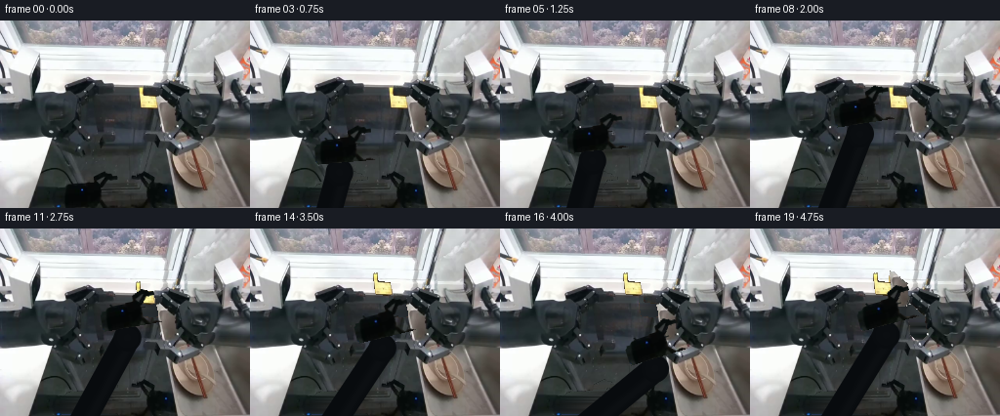
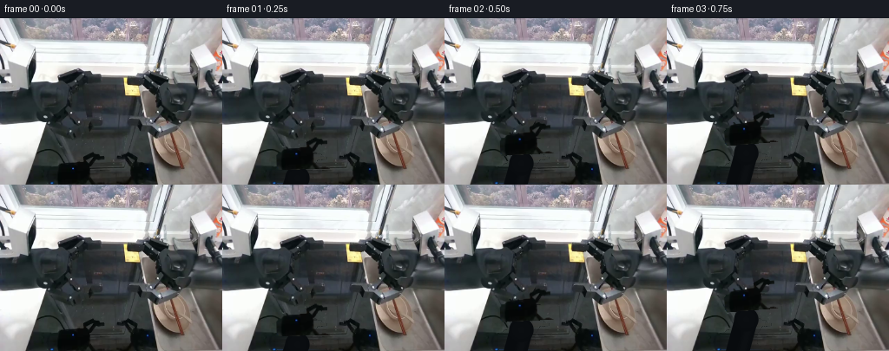

CODING AGENTS AS PIXEL WORLD MODELS
traex/GPT-6.1-Sol · common50_0004
点击播放 · 原生 RGB 像素
逐轮保存的候选
回放视频、检查图与代码变化。
每份候选均可单独播放。实际图片检查记录在下方工具轨迹中。
候选 01播放与检查图
点击播放 · 原生 RGB 像素


展开代码变化
--- 上一保存版本
+++ 本次保存版本
@@ -0,0 +1,193 @@
+from pathlib import Path
+import numpy as np
+from PIL import Image, ImageDraw
+from scipy.ndimage import binary_fill_holes, binary_closing, binary_dilation, gaussian_filter, map_coordinates
+import artifact_io
+
+ROOT=Path(__file__).resolve().parent
+IM=np.asarray(Image.open(ROOT/'first_frame.png').convert('RGB'))
+H,W=IM.shape[:2]
+Y,X=np.mgrid[:H,:W]
+
+def poly(points):
+ a=Image.new('L',(W,H)); ImageDraw.Draw(a).polygon(points,fill=255)
+ return np.array(a)>0
+
+# Pixel-exact rigid source components, with the basin as the stationary layer.
+arm_roi=poly([(105,153),(111,155),(121,158),(122,164),(112,166),(109,169),(106,175),(106,181),(113,187),(123,192),(61,192),(61,174),(65,169),(72,165),(94,165),(95,158),(101,154)])
+arm_mask=arm_roi & (IM.mean(2)<33)
+arm_mask=binary_fill_holes(binary_closing(arm_mask,iterations=1))
+# Preserve source reaching the bottom of the image.
+arm_mask[191]=arm_roi[191] & (IM[191].mean(1)<33)
+arm_mask |= poly([(64,172),(102,171),(103,183),(108,190),(104,192),(64,192),(61,183)])
+arm_mask &= arm_roi
+
+bowl_roi=poly([(141,67),(146,67),(148,75),(158,76),(162,79),(163,88),(161,91),(146,90),(143,88),(141,77)])
+bowl_mask=bowl_roi & ((IM[:,:,0].astype(int)-IM[:,:,2].astype(int))>21)
+bowl_mask=binary_fill_holes(binary_closing(bowl_mask,iterations=1))
+plate_roi=poly([(161,77),(166,78),(169,82),(172,83),(177,87),(180,91),(181,104),(180,109),(176,113),(169,113),(166,110),(162,105),(161,96),(159,91),(160,85)])
+plate_mask=plate_roi & (IM.mean(2)>67)
+plate_mask=binary_fill_holes(binary_closing(plate_mask,iterations=1))
+chop_mask=poly([(107,101),(111,100),(117,101),(118,103),(114,104),(108,103)])
+
+# Infill only revealed occlusions using samples of the same metal basin.
+def background(mask,kind):
+ out=IM.copy().astype(float)
+ if kind=='arm':
+ for y in range(153,H):
+ xs=np.flatnonzero(mask[y])
+ if not len(xs):continue
+ l=max(0,xs.min()-3);r=min(W-1,xs.max()+3)
+ a=np.median(IM[y,max(48,l-5):l+1],axis=0)
+ b=np.median(IM[y,r:min(W,r+7)],axis=0)
+ t=(xs-l)/(r-l)
+ val=a[None]*(1-t[:,None])+b[None]*t[:,None]
+ # Match basin's low-frequency shading and sensor grain.
+ grain=(IM[y,124+(xs%17)].astype(float)-gaussian_filter(IM.astype(float),(.8,.8,0))[y,124+(xs%17)])*.28
+ out[y,xs]=val+grain
+ elif kind=='bowl':
+ for y in range(65,94):
+ xs=np.flatnonzero(mask[y])
+ if not len(xs):continue
+ a=np.median(IM[y,132:140],axis=0).astype(float)
+ b=np.median(IM[y,150:157],axis=0).astype(float) if y<76 else np.median(IM[y,176:181],axis=0).astype(float)
+ if y>=76:b=np.array([35,40,43.])
+ t=np.clip((xs-139)/26,0,1)
+ out[y,xs]=a*(1-t[:,None])+b*t[:,None]
+ elif kind=='plate':
+ for y in range(75,116):
+ xs=np.flatnonzero(mask[y])
+ if len(xs):
+ a=np.median(IM[y,183:191],axis=0).astype(float)
+ b=np.median(IM[y,149:155],axis=0).astype(float)
+ if y<90:b=np.array([41,45,47.])
+ t=np.clip((xs-156)/25,0,1)
+ out[y,xs]=b*(1-t[:,None])+a*t[:,None]
+ else:
+ for y in range(99,106):
+ xs=np.flatnonzero(mask[y]);out[y,xs]=(IM[y-3,xs].astype(float)+IM[y+3,xs].astype(float))/2
+ return np.clip(out,0,255).astype(np.uint8)
+
+cleared={k:background(m,k) for k,m in [('arm',arm_mask),('bowl',bowl_mask),('plate',plate_mask),('chop',chop_mask)]}
+
+# Rigid affine resampling, premultiplied alpha prevents dark fringes.
+def sprite(canvas,mask,center,dest,angle=0,scale=1,closure=0):
+ rad=np.deg2rad(angle);co=np.cos(rad);si=np.sin(rad)
+ dx=(X-dest[0])/scale;dy=(Y-dest[1])/scale
+ sx=co*dx+si*dy+center[0];sy=-si*dx+co*dy+center[1]
+ if closure:
+ f=np.clip((167-sy)/10,0,1)
+ sx+=np.where(sx>110,closure*f,-closure*.6*f)
+ coords=[sy,sx]
+ a=map_coordinates(mask.astype(float),coords,order=1,mode='constant',cval=0)
+ tex=np.stack([map_coordinates(IM[:,:,c].astype(float)*mask,coords,order=1,mode='constant',cval=0) for c in range(3)],axis=2)
+ return canvas*(1-a[:,:,None])+tex
+
+def segment(canvas,p,q,r,col=(10,13,16),end_joint=True):
+ p=np.array(p,float);q=np.array(q,float);d=q-p
+ t=np.clip(((X-p[0])*d[0]+(Y-p[1])*d[1])/(d@d),0,1)
+ xx=X-p[0]-t*d[0];yy=Y-p[1]-t*d[1]
+ rr=np.sqrt(xx*xx+yy*yy)
+ a=np.clip(r+.5-rr,0,1)
+ # Cylindrical illumination, dark anodized material like the source arm.
+ sign=(xx*d[1]-yy*d[0])/max(np.linalg.norm(d),1)
+ sheen=4.5*np.exp(-((sign+r*.4)/(r*.35))**2)
+ value=np.array(col)[None,None,:]+sheen[:,:,None]
+ canvas=canvas*(1-a[:,:,None])+value*a[:,:,None]
+ if end_joint:
+ r2=r*1.06;dist=np.hypot(X-q[0],Y-q[1]);alpha=np.clip(r2+.5-dist,0,1)
+ v=np.array([9.,12.,15.])[None,None]+2*np.clip(1-dist[:,:,None]/r2,0,1)
+ canvas=canvas*(1-alpha[:,:,None])+v*alpha[:,:,None]
+ return canvas
+
+def smooth(a):return a*a*(3-2*a)
+# End-effector jaw contact point. Separate reach, close, lift, and release phases.
+keys=[
+ (0,(107,162),0,0),
+ (2,(109,127),-3,0),
+ (4,(113,102),-6,0),
+ (5,(113,102),-6,1),
+ (6,(111,84),-9,1),
+ (7,(113,67),-8,0),
+ (9,(145,80),-10,0),
+ (10,(149,82),-10,1),
+ (11,(146,69),-10,1),
+ (12,(139,59),-10,1),
+ (13,(133,60),-10,0),
+ (15,(164,97),-17,0),
+ (16,(169,99),-17,1),
+ (17,(165,87),-16,1),
+ (19,(151,65),-15,1),
+]
+def pose(i):
+ for a,b in zip(keys,keys[1:]):
+ if a[0]<=i<=b[0]:
+ t=smooth((i-a[0])/(b[0]-a[0]));p=(1-t)*np.array(a[1])+t*np.array(b[1])
+ return p,(1-t)*a[2]+t*b[2],(1-t)*a[3]+t*b[3]
+ return np.array(keys[-1][1]),keys[-1][2],keys[-1][3]
+
+# Each item follows the closed jaw during its lift, then rests on the counter.
+def item_pose(kind,i,p):
+ if kind=='chop':
+ if i<=5:return np.array([113.,102.]),0,False
+ if i<=7:return p, (i-5)*7,True
+ return np.array([113.,67.]),14,True
+ if kind=='bowl':
+ if i<=10:return np.array([149.,82.]),0,False
+ if i<=13:return p,0,True
+ return np.array([133.,60.]),0,True
+ if i<=16:return np.array([169.,99.]),0,False
+ return p,0,True
+
+# Soft contact shadows only; all static workspace pixels remain fixed.
+def shadow(c,mask,src,dest,alpha=.13):
+ dx=dest[0]-src[0];dy=dest[1]-src[1]+3
+ m=map_coordinates(mask.astype(float),[Y-dy,X-dx],order=1,mode='constant',cval=0)
+ m=gaussian_filter(m,1.5)*alpha
+ return c*(1-m[:,:,None])
+
+frames=[IM.copy()]
+for i in range(1,20):
+ p,angle,closed=pose(i)
+ c=IM.astype(float).copy()
+ c[arm_mask]=cleared['arm'][arm_mask]
+ states={}
+ for kind,m,ctr in [('chop',chop_mask,(113,102)),('bowl',bowl_mask,(149,82)),('plate',plate_mask,(169,99))]:
+ dst,ang,moved=item_pose(kind,i,p);states[kind]=(dst,ang,moved)
+ if moved:c[m]=cleared[kind][m]
+ # Fixed three-dimensional upper link: its depth is selected by the sphere
+ # constraint, so a change in projected length is an out-of-plane rotation.
+ rad=np.deg2rad(angle);rot=np.array([[np.cos(rad),-np.sin(rad)],[np.sin(rad),np.cos(rad)]])
+ elbow=p+rot@np.array([-23.,39.])
+ base=np.array([76.,211.]);projected=np.linalg.norm(elbow-base)
+ depth=np.sqrt(max(0,111.**2-projected**2))
+ upper_radius=13.3
+ # Subtle basin cast shadow under the moving rigid limb.
+ if i>=2:
+ s=np.zeros((H,W));d=elbow-base
+ tt=np.clip(((X-base[0])*d[0]+(Y-base[1])*d[1])/(d@d),0,1)
+ rr=np.hypot(X-base[0]-tt*d[0]-3,Y-base[1]-tt*d[1]-3)
+ s=np.clip((16-rr)/7,0,1)*.10
+ c*=1-s[:,:,None]
+ c=segment(c,base,elbow,upper_radius,(8,11,14))
+ # Item shadows and the dish sprites go behind the fingers.
+ for kind,m,ctr in [('chop',chop_mask,(113,102)),('plate',plate_mask,(169,99)),('bowl',bowl_mask,(149,82))]:
+ dst,ang,moved=states[kind]
+ if moved:
+ c=shadow(c,m,ctr,dst,.11)
+ c=sprite(c,m,ctr,dst,ang)
+ # Forearm and wrist are one rigid body. No frame-to-frame shape scaling.
+ c=sprite(c,arm_mask,(107,162),p,angle,1,closed*1.25)
+ # A small near jaw pad supplies the visible contact over the picked rim.
+ if closed>.2 and i>=5:
+ a=p+rot@np.array([-3.,5.]);b=p+rot@np.array([0.,2.])
+ c=segment(c,a,b,1.5,(12,15,17),False)
+ frames.append(np.clip(c,0,255).round().astype(np.uint8))
+frames=np.asarray(frames,dtype=np.uint8)
+assert np.array_equal(frames[0],IM)
+artifact_io.save(frames,ROOT)
+# Save numeric segmentation diagnostics as local intermediate data.
+np.savez_compressed(ROOT/'construction.npz',arm=arm_mask,bowl=bowl_mask,plate=plate_mask,chopsticks=chop_mask)
+print('Generated:',frames.shape,frames.dtype)
+print('Masks:',{k:int(v.sum()) for k,v in [('arm',arm_mask),('bowl',bowl_mask),('plate',plate_mask),('chop',chop_mask)]})
+print('Frame changes:',[int(np.any(frames[j]!=frames[j-1],axis=2).sum()) for j in range(1,20)])
可观测工具轨迹
实际执行的命令与返回图片。
命令 1exit 0
/bin/bash -lc "ls -la && cat prompt.txt && printf '\\n---RULES---\\n' && cat GENERATION_RULES.md"
命令 2exit 0
/bin/bash -lc "cat task_spec.json && cat artifact_io.py && python - <<'PY'
from PIL import Image
import numpy as np
im=np.array(Image.open('first_frame.png'))
print(im.shape)
# luminance ascii
x=np.array(Image.open('first_frame.png').resize((96,72)))
g=x.mean(2)
a=' .,:;irsXA253hMHGS#9B&@'
for row in g:
print(''.join(a[int(v/256*len(a))] for v in row))
# quantized frequent colors
q=(im//16)*16
u,c=np.unique(q.reshape(-1,3),axis=0,return_counts=True)
print(sorted(zip(c.tolist(),u.tolist()),reverse=True)[:40])
PY"命令 3exit 0
/bin/bash -lc "python - <<'PY'
import numpy as np
from PIL import Image
from scipy.ndimage import label,find_objects
im=np.array(Image.open('first_frame.png')).astype(int)
y,x=np.mgrid[:192,:256]
c=im[:,:,0]-im[:,:,2]
mask=(c>13)&(im[:,:,0]>65)
l,n=label(mask)
print('warm components')
for j,s in enumerate(find_objects(l)):
if s is not None and np.sum(l[s]==j+1)>8:
inds=np.where(l==j+1)
print(j+1,len(inds[0]), (inds[1].min(),inds[0].min(),inds[1].max(),inds[0].max()),'center',round(inds[1].mean(),1),round(inds[0].mean(),1),'rgb',im[inds].mean(0).round(1))
print('downsampled chroma map, x=0:256')
im2=np.array(Image.open('first_frame.png').resize((128,96))).astype(int)
chars=' .:-=+*#%@'
for j,row in enumerate(im2):
if j%10==0: print(' '+''.join(str(k//10%10) for k in range(128)))
print('%3d '%(j*2)+''.join(chars[min(9,int(p.mean()*10/256))] if abs(int(p[0])-int(p[2]))<12 else 'b' if p[0]>p[2] else 'c' for p in row))
PY"命令 4exit 0
/bin/bash -lc "python - <<'PY'
from PIL import Image
import numpy as np
im=np.array(Image.open('first_frame.png')).astype(int)
for name,box in [('left_arm',(45,130,121,192)),('sink objects',(125,55,199,126)),('all sinks',(45,60,185,160))]:
x0,y0,x1,y1=box
print('\\n',name,box)
g=im[y0:y1,x0:x1].mean(2)
chars=' .,:;irsXA253hMHGS#9B&@'
if name=='all sinks':g=g[::2,::2]
for i,row in enumerate(g): print('%3d '%(y0+i*(2 if name=='all sinks' else 1))+''.join(chars[int(v*len(chars)/256)] for v in row))
print('\\nRGB samples on object region')
for y in range(60,131,5):
print(y,' '.join(f'{x}:{tuple(im[y,x])}' for x in range(135,186,5)))
PY"命令 5exit 0
/bin/bash -lc "python - <<'PY'
from PIL import Image
import numpy as np
from scipy import ndimage as ndi
im=np.asarray(Image.open('first_frame.png')).astype(float)
for name,box in [('object colors',(135,65,183,115)),('robot silhouette',(65,150,121,192)),('sink edges',(57,60,180,142))]:
x0,y0,x1,y1=box
print('\\n'+name)
print(' '+''.join(str(x//10%10) for x in range(x0,x1)))
print(' '+''.join(str(x%10) for x in range(x0,x1)))
a=im[y0:y1,x0:x1]
for j,row in enumerate(a):
line=''
for r,g,b in row:
v=(r+g+b)/3
if name=='object colors':
z='Y' if r-b>45 and r>180 else 'y' if r-b>25 else 'w' if r-b>12 else ' '
if z==' ': z='.' if v<35 else ':' if v<65 else '*' if v<110 else '#' if v<160 else '@'
elif name=='robot silhouette':
z='@' if v<10 else 'O' if v<20 else 'o' if v<30 else '.' if v<50 else '+' if v<90 else '='
else:
z='@' if v>205 else '#' if v>150 else '*' if v>105 else '+' if v>75 else ':' if v>50 else '.' if v>30 else ' '
line+=z
print(f'{y0+j:3d} '+line)
PY"命令 6exit 0
/bin/bash -lc "python - <<'PY'
from PIL import Image
import numpy as np
im=np.array(Image.open('first_frame.png')).astype(int)
for box in [(75,80,160,150),(60,60,140,105),(80,140,175,190)]:
x0,y0,x1,y1=box
print('\\n',box)
print(' '+''.join(str(x//10%10) for x in range(x0,x1)))
print(' '+''.join(str(x%10) for x in range(x0,x1)))
for y in range(y0,y1):
line=''
for x in range(x0,x1):
r,g,b=im[y,x];v=(r+g+b)/3
if r-b>7:z='B' if v>75 else 'b' if v>45 else 'v' if v>25 else 'w'
elif b-r>8:z='C' if v>75 else 'c' if v>45 else 'u' if v>25 else 'k'
else:z='@' if v<12 else 'O' if v<22 else '.' if v<32 else ':' if v<42 else '-' if v<52 else '=' if v<65 else '+' if v<80 else '*' if v<115 else '#' if v<160 else '%'
line+=z
print(f'{y:3d} '+line)
PY"命令 7exit 0
/bin/bash -lc "python - <<'PY'
from PIL import Image
import numpy as np
from scipy.ndimage import gaussian_filter
im=np.array(Image.open('first_frame.png')).astype(float)
g=im.mean(2)
for box in [(90,80,148,117),(90,95,150,137),(135,66,164,92)]:
x0,y0,x1,y1=box
print('\\nlocal contrast',box)
a=g[y0:y1,x0:x1]
a=(a-gaussian_filter(a,3))*3+128
ch=' .,:;irsXA253hMHGS#9B&@'
print(' '+''.join(str(x//10%10) for x in range(x0,x1)))
print(' '+''.join(str(x%10) for x in range(x0,x1)))
for j,row in enumerate(a): print(f'{y0+j:3d} '+''.join(ch[int(np.clip(v,0,255)/256*len(ch))] for v in row))
print('colors at chopstick')
for y in range(96,108):print(y,im[y,103:119].astype(int).tolist())
PY"命令 8exit 0
/bin/bash -lc "python - <<'PY'
from PIL import Image
import numpy as np
from scipy.ndimage import label,binary_fill_holes,binary_closing
im=np.array(Image.open('first_frame.png'));g=im.mean(2); yy,xx=np.mgrid[:192,:256]
m=(g<28)&(xx>=64)&(xx<123)&(yy>=152)
l,n=label(m);j=l[180,88];m=l==j;m=binary_fill_holes(binary_closing(m,iterations=1))
for y in range(150,192):
xs=np.where(m[y])[0]
if len(xs):print(y,xs.min(),xs.max(),len(xs))
print('counts',m.sum())
PY"命令 9exit 0
/bin/bash -lc "python - <<'PY'
import numpy as np
from PIL import Image
im=np.array(Image.open('first_frame.png')).astype(int)
# warm and luminance intervals
for y in range(58,136):
runs=[]
for name,m in [('warm',(im[y,:,0]-im[y,:,2]>8)&(im[y,:,0]>50)),('bright',(im[y].mean(1)>75))]:
m[:84]=False;m[180:]=False
ids=np.flatnonzero(m)
if len(ids):
ss=np.split(ids,np.where(np.diff(ids)>1)[0]+1)
runs.append(name+':'+','.join(f'{s[0]}-{s[-1]}' for s in ss))
print(y,' '.join(runs))
PY"命令 10exit 0
/bin/bash -lc "cat > generate.py <<'PY'
from pathlib import Path
import numpy as np
from PIL import Image, ImageDraw
from scipy.ndimage import binary_fill_holes, binary_closing, binary_dilation, gaussian_filter, map_coordinates
import artifact_io
ROOT=Path(__file__).resolve().parent
IM=np.asarray(Image.open(ROOT/'first_frame.png').convert('RGB'))
H,W=IM.shape[:2]
Y,X=np.mgrid[:H,:W]
def poly(points):
a=Image.new('L',(W,H)); ImageDraw.Draw(a).polygon(points,fill=255)
return np.array(a)>0
# Pixel-exact rigid source components, with the basin as the stationary layer.
arm_roi=poly([(105,153),(111,155),(121,158),(122,164),(112,166),(109,169),(106,175),(106,181),(113,187),(123,192),(61,192),(61,174),(65,169),(72,165),(94,165),(95,158),(101,154)])
arm_mask=arm_roi & (IM.mean(2)<33)
arm_mask=binary_fill_holes(binary_closing(arm_mask,iterations=1))
# Preserve source reaching the bottom of the image.
arm_mask[191]=arm_roi[191] & (IM[191].mean(1)<33)
arm_mask |= poly([(64,172),(102,171),(103,183),(108,190),(104,192),(64,192),(61,183)])
arm_mask &= arm_roi
bowl_roi=poly([(141,67),(146,67),(148,75),(158,76),(162,79),(163,88),(161,91),(146,90),(143,88),(141,77)])
bowl_mask=bowl_roi & ((IM[:,:,0].astype(int)-IM[:,:,2].astype(int))>21)
bowl_mask=binary_fill_holes(binary_closing(bowl_mask,iterations=1))
plate_roi=poly([(161,77),(166,78),(169,82),(172,83),(177,87),(180,91),(181,104),(180,109),(176,113),(169,113),(166,110),(162,105),(161,96),(159,91),(160,85)])
plate_mask=plate_roi & (IM.mean(2)>67)
plate_mask=binary_fill_holes(binary_closing(plate_mask,iterations=1))
chop_mask=poly([(107,101),(111,100),(117,101),(118,103),(114,104),(108,103)])
# Infill only revealed occlusions using samples of the same metal basin.
def background(mask,kind):
out=IM.copy().astype(float)
if kind=='arm':
for y in range(153,H):
xs=np.flatnonzero(mask[y])
if not len(xs):continue
l=max(0,xs.min()-3);r=min(W-1,xs.max()+3)
a=np.median(IM[y,max(48,l-5):l+1],axis=0)
b=np.median(IM[y,r:min(W,r+7)],axis=0)
t=(xs-l)/(r-l)
val=a[None]*(1-t[:,None])+b[None]*t[:,None]
# Match basin's low-frequency shading and sensor grain.
grain=(IM[y,124+(xs%17)].astype(float)-gaussian_filter(IM.astype(float),(.8,.8,0))[y,124+(xs%17)])*.28
out[y,xs]=val+grain
elif kind=='bowl':
for y in range(65,94):
xs=np.flatnonzero(mask[y])
if not len(xs):continue
a=np.median(IM[y,132:140],axis=0).astype(float)
b=np.median(IM[y,150:157],axis=0).astype(float) if y<76 else np.median(IM[y,176:181],axis=0).astype(float)
if y>=76:b=np.array([35,40,43.])
t=np.clip((xs-139)/26,0,1)
out[y,xs]=a*(1-t[:,None])+b*t[:,None]
elif kind=='plate':
for y in range(75,116):
xs=np.flatnonzero(mask[y])
if len(xs):
a=np.median(IM[y,183:191],axis=0).astype(float)
b=np.median(IM[y,149:155],axis=0).astype(float)
if y<90:b=np.array([41,45,47.])
t=np.clip((xs-156)/25,0,1)
out[y,xs]=b*(1-t[:,None])+a*t[:,None]
else:
for y in range(99,106):
xs=np.flatnonzero(mask[y]);out[y,xs]=(IM[y-3,xs].astype(float)+IM[y+3,xs].astype(float))/2
return np.clip(out,0,255).astype(np.uint8)
cleared={k:background(m,k) for k,m in [('arm',arm_mask),('bowl',bowl_mask),('plate',plate_mask),('chop',chop_mask)]}
# Rigid affine resampling, premultiplied alpha prevents dark fringes.
def sprite(canvas,mask,center,dest,angle=0,scale=1,closure=0):
rad=np.deg2rad(angle);co=np.cos(rad);si=np.sin(rad)
dx=(X-dest[0])/scale;dy=(Y-dest[1])/scale
sx=co*dx+si*dy+center[0];sy=-si*dx+co*dy+center[1]
if closure:
f=np.clip((167-sy)/10,0,1)
sx+=np.where(sx>110,closure*f,-closure*.6*f)
coords=[sy,sx]
a=map_coordinates(mask.astype(float),coords,order=1,mode='constant',cval=0)
tex=np.stack([map_coordinates(IM[:,:,c].astype(float)*mask,coords,order=1,mode='constant',cval=0) for c in range(3)],axis=2)
return canvas*(1-a[:,:,None])+tex
def segment(canvas,p,q,r,col=(10,13,16),end_joint=True):
p=np.array(p,float);q=np.array(q,float);d=q-p
t=np.clip(((X-p[0])*d[0]+(Y-p[1])*d[1])/(d@d),0,1)
xx=X-p[0]-t*d[0];yy=Y-p[1]-t*d[1]
rr=np.sqrt(xx*xx+yy*yy)
a=np.clip(r+.5-rr,0,1)
# Cylindrical illumination, dark anodized material like the source arm.
sign=(xx*d[1]-yy*d[0])/max(np.linalg.norm(d),1)
sheen=4.5*np.exp(-((sign+r*.4)/(r*.35))**2)
value=np.array(col)[None,None,:]+sheen[:,:,None]
canvas=canvas*(1-a[:,:,None])+value*a[:,:,None]
if end_joint:
r2=r*1.06;dist=np.hypot(X-q[0],Y-q[1]);alpha=np.clip(r2+.5-dist,0,1)
v=np.array([9.,12.,15.])[None,None]+2*np.clip(1-dist[:,:,None]/r2,0,1)
canvas=canvas*(1-alpha[:,:,None])+v*alpha[:,:,None]
return canvas
def smooth(a):return a*a*(3-2*a)
# End-effector jaw contact point. Separate reach, close, lift, and release phases.
keys=[
(0,(107,162),0,0),
(2,(109,127),-3,0),
(4,(113,102),-6,0),
(5,(113,102),-6,1),
(6,(111,84),-9,1),
(7,(113,67),-8,0),
(9,(145,80),-10,0),
(10,(149,82),-10,1),
(11,(146,69),-10,1),
(12,(139,59),-10,1),
(13,(133,60),-10,0),
(15,(164,97),-17,0),
(16,(169,99),-17,1),
(17,(165,87),-16,1),
(19,(151,65),-15,1),
]
def pose(i):
for a,b in zip(keys,keys[1:]):
if a[0]<=i<=b[0]:
t=smooth((i-a[0])/(b[0]-a[0]));p=(1-t)*np.array(a[1])+t*np.array(b[1])
return p,(1-t)*a[2]+t*b[2],(1-t)*a[3]+t*b[3]
return np.array(keys[-1][1]),keys[-1][2],keys[-1][3]
# Each item follows the closed jaw during its lift, then rests on the counter.
def item_pose(kind,i,p):
if kind=='chop':
if i<=5:return np.array([113.,102.]),0,False
if i<=7:return p, (i-5)*7,True
return np.array([113.,67.]),14,True
if kind=='bowl':
if i<=10:return np.array([149.,82.]),0,False
if i<=13:return p,0,True
return np.array([133.,60.]),0,True
if i<=16:return np.array([169.,99.]),0,False
return p,0,True
# Soft contact shadows only; all static workspace pixels remain fixed.
def shadow(c,mask,src,dest,alpha=.13):
dx=dest[0]-src[0];dy=dest[1]-src[1]+3
m=map_coordinates(mask.astype(float),[Y-dy,X-dx],order=1,mode='constant',cval=0)
m=gaussian_filter(m,1.5)*alpha
return c*(1-m[:,:,None])
frames=[IM.copy()]
for i in range(1,20):
p,angle,closed=pose(i)
c=IM.astype(float).copy()
c[arm_mask]=cleared['arm'][arm_mask]
states={}
for kind,m,ctr in [('chop',chop_mask,(113,102)),('bowl',bowl_mask,(149,82)),('plate',plate_mask,(169,99))]:
dst,ang,moved=item_pose(kind,i,p);states[kind]=(dst,ang,moved)
if moved:c[m]=cleared[kind][m]
# Fixed three-dimensional upper link: its depth is selected by the sphere
# constraint, so a change in projected length is an out-of-plane rotation.
rad=np.deg2rad(angle);rot=np.array([[np.cos(rad),-np.sin(rad)],[np.sin(rad),np.cos(rad)]])
elbow=p+rot@np.array([-23.,39.])
base=np.array([76.,211.]);projected=np.linalg.norm(elbow-base)
depth=np.sqrt(max(0,111.**2-projected**2))
upper_radius=13.3
# Subtle basin cast shadow under the moving rigid limb.
if i>=2:
s=np.zeros((H,W));d=elbow-base
tt=np.clip(((X-base[0])*d[0]+(Y-base[1])*d[1])/(d@d),0,1)
rr=np.hypot(X-base[0]-tt*d[0]-3,Y-base[1]-tt*d[1]-3)
s=np.clip((16-rr)/7,0,1)*.10
c*=1-s[:,:,None]
c=segment(c,base,elbow,upper_radius,(8,11,14))
# Item shadows and the dish sprites go behind the fingers.
for kind,m,ctr in [('chop',chop_mask,(113,102)),('plate',plate_mask,(169,99)),('bowl',bowl_mask,(149,82))]:
dst,ang,moved=states[kind]
if moved:
c=shadow(c,m,ctr,dst,.11)
c=sprite(c,m,ctr,dst,ang)
# Forearm and wrist are one rigid body. No frame-to-frame shape scaling.
c=sprite(c,arm_mask,(107,162),p,angle,1,closed*1.25)
# A small near jaw pad supplies the visible contact over the picked rim.
if closed>.2 and i>=5:
a=p+rot@np.array([-3.,5.]);b=p+rot@np.array([0.,2.])
c=segment(c,a,b,1.5,(12,15,17),False)
frames.append(np.clip(c,0,255).round().astype(np.uint8))
frames=np.asarray(frames,dtype=np.uint8)
assert np.array_equal(frames[0],IM)
artifact_io.save(frames,ROOT)
# Save numeric segmentation diagnostics as local intermediate data.
np.savez_compressed(ROOT/'construction.npz',arm=arm_mask,bowl=bowl_mask,plate=plate_mask,chopsticks=chop_mask)
print('Generated:',frames.shape,frames.dtype)
print('Masks:',{k:int(v.sum()) for k,v in [('arm',arm_mask),('bowl',bowl_mask),('plate',plate_mask),('chop',chop_mask)]})
print('Frame changes:',[int(np.any(frames[j]"'!=frames[j-1],axis=2).sum()) for j in range(1,20)])
PY
python generate.py'命令 11exit 0
/bin/bash -lc "python - <<'PY'
from PIL import Image
import numpy as np
for j in [1,5,10,16,19]:
im=np.array(Image.open(f'frames/{j:02}.png'));g=im.mean(2)
print('\\nFRAME',j)
for y in range(50,192,3):
print(f'{y:3} '+''.join('@' if v<12 else 'O' if v<23 else '.' if v<40 else ':' if v<70 else '*' if v<120 else '#' if v<180 else 'Y' if r-b>35 else '+' for r,gg,b,v in zip(im[y,50:191:2,0].astype(int),im[y,50:191:2,1],im[y,50:191:2,2].astype(int),g[y,50:191:2])))
PY"命令 12exit 0
/bin/bash -lc "python - <<'PY'
from pathlib import Path
from PIL import Image
import numpy as np
p=np.load('pixels.npz')['pixels']
f=np.stack([np.array(Image.open(f'frames/{i:02d}.png')) for i in range(20)])
first=np.array(Image.open('first_frame.png'))
print('Exact initial frame:',np.array_equal(f[0],first))
print('All frames:',f.shape,f.dtype,'packed',p.shape)
# Static image pixels are constant apart from the left manipulator and manipulated items.
print('Right fixed gripper stability:',np.all(f[:,155:190,150:166]==f[0,155:190,150:166]))
print('Saved files:',[(n,Path(n).stat().st_size) for n in ['generate.py','pixels.npz','index.html','inspection.png']])
PY"保存候选 1 份；完成命令 12 次；可验证图片返回 0 张。原始 API 响应与完整日志保留在本地。